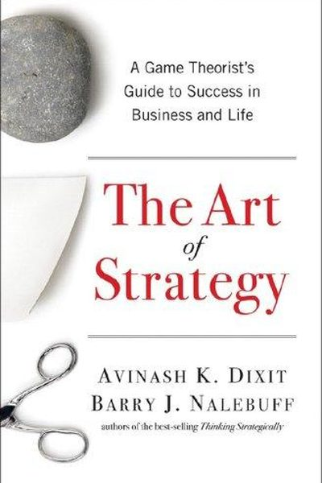
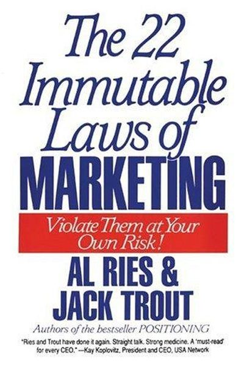
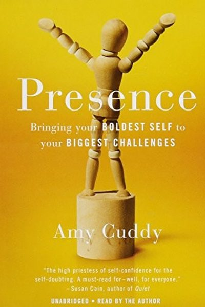
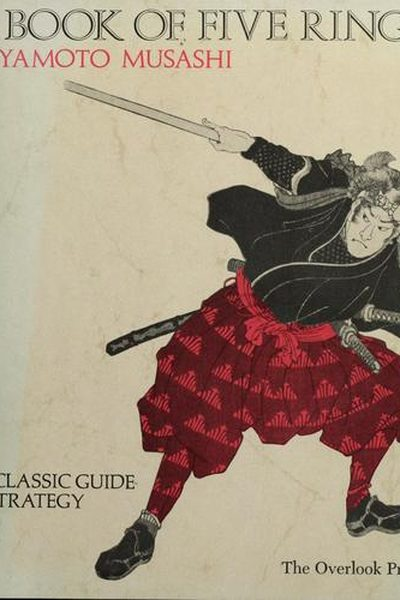
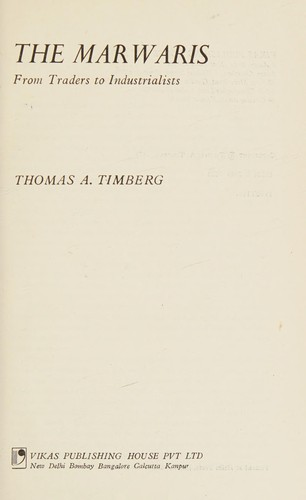
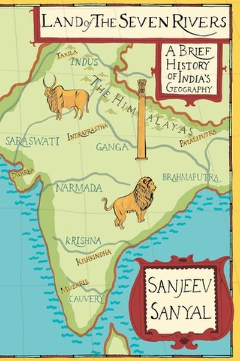
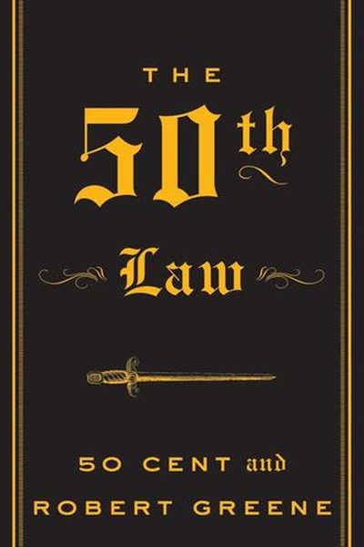
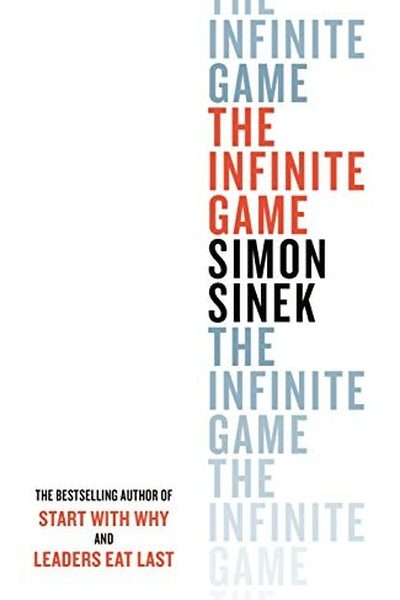
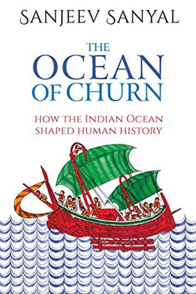

Library › Topics › Power & Strategy
Everything on power and strategy
The complete shelf on how power actually moves - the 48 laws crowd, the strategy classics, and the histories that prove it: 66 books.
66 BOOKS · ALL FREE · AUDIO IN 26 LANGUAGES The 48 Laws of PowerRobert Greene · 1998Power is a social game. Learn its laws - to play them or to defend against those who play them on you.22 min · 16 lessons · free summary
The 48 Laws of PowerRobert Greene · 1998Power is a social game. Learn its laws - to play them or to defend against those who play them on you.22 min · 16 lessons · free summary The Daily LawsRobert Greene · 2021You don't master power in a week - you absorb it daily. One page a day, for a year.8 min · 6 lessons · free summary
The Daily LawsRobert Greene · 2021You don't master power in a week - you absorb it daily. One page a day, for a year.8 min · 6 lessons · free summary The 21 Irrefutable Laws of LeadershipJohn C. Maxwell · 1998Leadership is influence - nothing more, nothing less. Master the 21 laws and people follow willingly.11 min · 8 lessons · free summary
The 21 Irrefutable Laws of LeadershipJohn C. Maxwell · 1998Leadership is influence - nothing more, nothing less. Master the 21 laws and people follow willingly.11 min · 8 lessons · free summary
The Art of StrategyAvinash Dixit & Barry Nalebuff · 1991Life is a game of interdependent moves. Win by thinking about what others will do - and what they think you'll8 min · 6 lessons · free summary The Art of WarSun Tzu · -500Every battle is won before it is fought: know yourself, know the enemy, choose the ground, and win - ideally w8 min · 6 lessons · free summary
The Art of WarSun Tzu · -500Every battle is won before it is fought: know yourself, know the enemy, choose the ground, and win - ideally w8 min · 6 lessons · free summary The PrinceNiccolò Machiavelli · 1532Power has its own rules. Learn them - to lead, or to recognize those who play them on you.8 min · 6 lessons · free summary
The PrinceNiccolò Machiavelli · 1532Power has its own rules. Learn them - to lead, or to recognize those who play them on you.8 min · 6 lessons · free summary Good Strategy Bad StrategyRichard Rumelt · 2011Real strategy is a diagnosis, a guiding policy and coherent action. Everything else is a vision statement.8 min · 6 lessons · free summary
Good Strategy Bad StrategyRichard Rumelt · 2011Real strategy is a diagnosis, a guiding policy and coherent action. Everything else is a vision statement.8 min · 6 lessons · free summary
The 22 Immutable Laws of MarketingAl Ries & Jack Trout · 1993Marketing has laws like physics. Break the Law of Leadership and no amount of ad spend saves you.8 min · 6 lessons · free summaryThe 33 Strategies of WarRobert Greene · 2006Life is a war of position and perception. Learn the 33 plays - or become someone else's lesson.8 min · 6 lessons · free summary The Laws of Human NatureRobert Greene · 2018Everyone you meet is driven by forces they don't see: irrationality, narcissism, envy, roles, and their shadow8 min · 6 lessons · free summary
The Laws of Human NatureRobert Greene · 2018Everyone you meet is driven by forces they don't see: irrationality, narcissism, envy, roles, and their shadow8 min · 6 lessons · free summary Scion of IkshvakuAmish Tripathi · 2015Amish's reimagined Ramayana - a prince who refuses power he hasn't earned, and learns that duty, fear and grea8 min · 6 lessons · free summary
Scion of IkshvakuAmish Tripathi · 2015Amish's reimagined Ramayana - a prince who refuses power he hasn't earned, and learns that duty, fear and grea8 min · 6 lessons · free summary The Power of HabitCharles Duhigg · 2012You can't extinguish a bad habit - you can only change it: keep the cue and reward, swap the routine.8 min · 6 lessons · free summary
The Power of HabitCharles Duhigg · 2012You can't extinguish a bad habit - you can only change it: keep the cue and reward, swap the routine.8 min · 6 lessons · free summary The Power of RegretDaniel H. Pink · 2022'No regrets' is a philosophy for people who don't want to learn. Regret is your clearest data about what you v8 min · 6 lessons · free summary
The Power of RegretDaniel H. Pink · 2022'No regrets' is a philosophy for people who don't want to learn. Regret is your clearest data about what you v8 min · 6 lessons · free summary Blue Ocean StrategyW. Chan Kim & Renée Mauborgne · 2005Stop fighting sharks in bloody red oceans. Create a blue one - where the rules are yours and the competition d8 min · 6 lessons · free summary
Blue Ocean StrategyW. Chan Kim & Renée Mauborgne · 2005Stop fighting sharks in bloody red oceans. Create a blue one - where the rules are yours and the competition d8 min · 6 lessons · free summary Chanakya NeetiRadhakrishnan Pillai · 2013Chanakya's practical sutras turn ambition into statecraft: manage yourself first, then money, then people.7 min · 10 lessons · free summary
Chanakya NeetiRadhakrishnan Pillai · 2013Chanakya's practical sutras turn ambition into statecraft: manage yourself first, then money, then people.7 min · 10 lessons · free summary Chanakya's ChantAshwin Sanghi · 2010Ashwin Sanghi's thriller pairs ancient Chanakya with a modern strategist - proving that statecraft, intelligen8 min · 6 lessons · free summary
Chanakya's ChantAshwin Sanghi · 2010Ashwin Sanghi's thriller pairs ancient Chanakya with a modern strategist - proving that statecraft, intelligen8 min · 6 lessons · free summary Corporate ChanakyaRadhakrishnan Pillai · 2013Radhakrishnan Pillai translates the Arthashastra into practical leadership - duty, strategy, treasury and self8 min · 6 lessons · free summary
Corporate ChanakyaRadhakrishnan Pillai · 2013Radhakrishnan Pillai translates the Arthashastra into practical leadership - duty, strategy, treasury and self8 min · 6 lessons · free summary How to Win Friends & Influence PeopleDale Carnegie · 1936You can make more friends in two months by becoming interested in other people than in two years trying to get11 min · 8 lessons · free summary
How to Win Friends & Influence PeopleDale Carnegie · 1936You can make more friends in two months by becoming interested in other people than in two years trying to get11 min · 8 lessons · free summary Influence: The Psychology of PersuasionRobert B. Cialdini · 1984Persuasion runs on fixed psychological triggers: reciprocity, commitment, social proof, liking, authority, sca9 min · 7 lessons · free summary
Influence: The Psychology of PersuasionRobert B. Cialdini · 1984Persuasion runs on fixed psychological triggers: reciprocity, commitment, social proof, liking, authority, sca9 min · 7 lessons · free summary Jaya: An Illustrated Retelling of the MahabharataDevdutt Pattanaik · 2010Devdutt Pattanaik's illustrated retelling of the Mahabharata - every character both right and wrong, and winni8 min · 6 lessons · free summary
Jaya: An Illustrated Retelling of the MahabharataDevdutt Pattanaik · 2010Devdutt Pattanaik's illustrated retelling of the Mahabharata - every character both right and wrong, and winni8 min · 6 lessons · free summary Onward: How Starbucks Fought for Its Life without Losing Its SoulHoward Schultz · 2011Howard Schultz's account of returning to Starbucks in 2008: diagnosing brand drift, closing stores for espress11 min · 8 lessons · free summary
Onward: How Starbucks Fought for Its Life without Losing Its SoulHoward Schultz · 2011Howard Schultz's account of returning to Starbucks in 2008: diagnosing brand drift, closing stores for espress11 min · 8 lessons · free summary Playing to WinA.G. Lafley & Roger Martin · 2013Strategy is not a plan - it's a set of five choices. Most companies make none of them deliberately.8 min · 6 lessons · free summary
Playing to WinA.G. Lafley & Roger Martin · 2013Strategy is not a plan - it's a set of five choices. Most companies make none of them deliberately.8 min · 6 lessons · free summary Pre-SuasionRobert Cialdini · 2016The best moment to persuade is before you start persuading. Set the frame first, and the argument sells itself8 min · 6 lessons · free summary
Pre-SuasionRobert Cialdini · 2016The best moment to persuade is before you start persuading. Set the frame first, and the argument sells itself8 min · 6 lessons · free summary
PresenceAmy Cuddy · 2015Presence isn't fake-it-till-you-make-it. It's believing your own story - and your body can help you get there.8 min · 6 lessons · free summary Raavan: Enemy of AryavartaAmish Tripathi · 2019Amish tells the Ramayana from Raavan's side - ambition without love, wounds weaponized, and why understanding 8 min · 6 lessons · free summary
Raavan: Enemy of AryavartaAmish Tripathi · 2019Amish tells the Ramayana from Raavan's side - ambition without love, wounds weaponized, and why understanding 8 min · 6 lessons · free summary Sita: An Illustrated Retelling of the RamayanaDevdutt Pattanaik · 2017Devdutt Pattanaik retells the Ramayana through Sita - quiet questions, conscious sacrifice, and the truth that8 min · 6 lessons · free summaryThe Accidental Prime MinisterSanjaya Baru · 2014Power is exercised through offices, files and gatekeepers - and the person in the chair matters less than the 8 min · 6 lessons · free summary
Sita: An Illustrated Retelling of the RamayanaDevdutt Pattanaik · 2017Devdutt Pattanaik retells the Ramayana through Sita - quiet questions, conscious sacrifice, and the truth that8 min · 6 lessons · free summaryThe Accidental Prime MinisterSanjaya Baru · 2014Power is exercised through offices, files and gatekeepers - and the person in the chair matters less than the 8 min · 6 lessons · free summary The Art of SeductionRobert Greene · 2001Seduction is the ultimate form of power: getting people to want what you want them to want - willingly.9 min · 7 lessons · free summary
The Art of SeductionRobert Greene · 2001Seduction is the ultimate form of power: getting people to want what you want them to want - willingly.9 min · 7 lessons · free summary The ArthashastraKautilya · -300Kautilya's science of wealth and power: secure the base, spy on reality, weigh every move by cost and conseque7 min · 10 lessons · free summary
The ArthashastraKautilya · -300Kautilya's science of wealth and power: secure the base, spy on reality, weigh every move by cost and conseque7 min · 10 lessons · free summary
The Book of Five RingsMiyamoto Musashi · 1645Strategy is a discipline of the mind. Win by timing, observation and rhythm - not brute force.8 min · 6 lessons · free summary The Dictator's HandbookBruce Bueno de Mesquita & Alastair Smith · 2011All leaders are dictators of a kind - they serve the few whose support keeps them in power. Learn the game.8 min · 6 lessons · free summary
The Dictator's HandbookBruce Bueno de Mesquita & Alastair Smith · 2011All leaders are dictators of a kind - they serve the few whose support keeps them in power. Learn the game.8 min · 6 lessons · free summary The Essays of Warren BuffettLawrence A. Cunningham (ed.) · 2001Own wonderful businesses, ignore the market's moods, and let compounding do the impossible.7 min · 9 lessons · free summary
The Essays of Warren BuffettLawrence A. Cunningham (ed.) · 2001Own wonderful businesses, ignore the market's moods, and let compounding do the impossible.7 min · 9 lessons · free summary The Immortals of MeluhaAmish Tripathi · 2010Amish Tripathi reimagines Shiva as an ordinary man made extraordinary by decisions - a masterclass in leadersh8 min · 6 lessons · free summary
The Immortals of MeluhaAmish Tripathi · 2010Amish Tripathi reimagines Shiva as an ordinary man made extraordinary by decisions - a masterclass in leadersh8 min · 6 lessons · free summary
The Marwaris: From Jagat Seth to the BirlasThomas A. Timberg · 2013An economic historian's study of the Marwari business community: how trust-based networks built India's greate11 min · 8 lessons · free summary The Mind of the StrategistKenichi Ohmae · 1982Strategy is not analysis - it's a state of mind. The best strategists think in insights, not spreadsheets.8 min · 6 lessons · free summary
The Mind of the StrategistKenichi Ohmae · 1982Strategy is not analysis - it's a state of mind. The best strategists think in insights, not spreadsheets.8 min · 6 lessons · free summary The Oath of the VayaputrasAmish Tripathi · 2013The Shiva Trilogy finale - Shiva faces the cost of truth, the banality of evil, and the discovery that the gre8 min · 6 lessons · free summary
The Oath of the VayaputrasAmish Tripathi · 2013The Shiva Trilogy finale - Shiva faces the cost of truth, the banality of evil, and the discovery that the gre8 min · 6 lessons · free summary The Power of Full EngagementJim Loehr & Tony Schwartz · 2003Time is fixed, energy is not. Manage your energy like an athlete - full engagement, full recovery - and perfor8 min · 6 lessons · free summary
The Power of Full EngagementJim Loehr & Tony Schwartz · 2003Time is fixed, energy is not. Manage your energy like an athlete - full engagement, full recovery - and perfor8 min · 6 lessons · free summary The Power of MomentsChip Heath & Dan Heath · 2017We remember peaks, pits, and transitions - not averages. Stop sanding off problems and start engineering momen8 min · 6 lessons · free summary
The Power of MomentsChip Heath & Dan Heath · 2017We remember peaks, pits, and transitions - not averages. Stop sanding off problems and start engineering momen8 min · 6 lessons · free summary The Power of NowEckhart Tolle · 1997All negativity is caused by time-denial of the present. Anxiety lives in the future, regret in the past - life8 min · 6 lessons · free summary
The Power of NowEckhart Tolle · 1997All negativity is caused by time-denial of the present. Anxiety lives in the future, regret in the past - life8 min · 6 lessons · free summary The Power of Positive ThinkingNorman Vincent Peale · 1952Change your thoughts and you change your world: believe in yourself, empty the fear, picture the outcome, and 8 min · 6 lessons · free summary
The Power of Positive ThinkingNorman Vincent Peale · 1952Change your thoughts and you change your world: believe in yourself, empty the fear, picture the outcome, and 8 min · 6 lessons · free summary The Power of Your Subconscious MindJoseph Murphy · 1963Your subconscious is soil: it grows whatever you plant - thoughts of success or seeds of fear. Choose the seed9 min · 7 lessons · free summary
The Power of Your Subconscious MindJoseph Murphy · 1963Your subconscious is soil: it grows whatever you plant - thoughts of success or seeds of fear. Choose the seed9 min · 7 lessons · free summary The Seven Spiritual Laws of SuccessDeepak Chopra · 1994Deepak Chopra distills success into seven universal laws: pure potentiality, giving, karma, least effort, inte9 min · 7 lessons · free summary
The Seven Spiritual Laws of SuccessDeepak Chopra · 1994Deepak Chopra distills success into seven universal laws: pure potentiality, giving, karma, least effort, inte9 min · 7 lessons · free summary The Snowball: Warren Buffett and the Business of LifeAlice Schroeder · 2008Life is a snowball: find wet snow and a long hill. Then protect your reputation - it's all you have.8 min · 6 lessons · free summary
The Snowball: Warren Buffett and the Business of LifeAlice Schroeder · 2008Life is a snowball: find wet snow and a long hill. Then protect your reputation - it's all you have.8 min · 6 lessons · free summary The War of ArtSteven Pressfield · 2002There's a force whose sole mission is to stop you from doing your work. Naming it - Resistance - is half the w8 min · 6 lessons · free summary
The War of ArtSteven Pressfield · 2002There's a force whose sole mission is to stop you from doing your work. Naming it - Resistance - is half the w8 min · 6 lessons · free summary The Way of the Peaceful WarriorDan Millman · 1980The warrior's way is not force but mindfulness: clear the mind of the past and future, and act now.7 min · 9 lessons · free summary
The Way of the Peaceful WarriorDan Millman · 1980The warrior's way is not force but mindfulness: clear the mind of the past and future, and act now.7 min · 9 lessons · free summary Unlimited PowerTony Robbins · 1986Peak states are not accidents: physiology, focus and meaning produce them on demand. Model what works, master 10 min · 10 lessons · free summary
Unlimited PowerTony Robbins · 1986Peak states are not accidents: physiology, focus and meaning produce them on demand. Model what works, master 10 min · 10 lessons · free summary Working BackwardsColin Bryar and Bill Carr · 2019Amazon's operating system explained by two insiders: customer obsession as the north star, working backwards f11 min · 10 lessons · free summary
Working BackwardsColin Bryar and Bill Carr · 2019Amazon's operating system explained by two insiders: customer obsession as the north star, working backwards f11 min · 10 lessons · free summary Ambani & SonsHamish McDonald · 2010The definitive business history of the Ambani family, showing how Dhirubhai built Reliance by mastering capita12 min · 7 lessons · free summary
Ambani & SonsHamish McDonald · 2010The definitive business history of the Ambani family, showing how Dhirubhai built Reliance by mastering capita12 min · 7 lessons · free summary An Era of DarknessShashi Tharoor · 2016Shashi Tharoor's counter-history of British rule - deindustrialization, the wealth drain and engineered famine8 min · 6 lessons · free summary
An Era of DarknessShashi Tharoor · 2016Shashi Tharoor's counter-history of British rule - deindustrialization, the wealth drain and engineered famine8 min · 6 lessons · free summary Annihilation of CasteB.R. Ambedkar · 1936Caste is not a religious ornament but a graded system of inequality that must be dismantled by law, reason and8 min · 6 lessons · free summary
Annihilation of CasteB.R. Ambedkar · 1936Caste is not a religious ornament but a graded system of inequality that must be dismantled by law, reason and8 min · 6 lessons · free summary Chanakya in YouRadhakrishnan Pillai · 2014Pillai's practical decoding of Chanakya's Arthashastra: how a 2,300-year-old manual of statecraft maps onto yo8 min · 6 lessons · free summaryEmpire of Pain: The Secret History of the Sackler DynastyPatrick Radden Keefe · 2021Keefe's forensic history of the Sackler family and Purdue Pharma: how marketing conquered medicine, how philan13 min · 10 lessons · free summary
Chanakya in YouRadhakrishnan Pillai · 2014Pillai's practical decoding of Chanakya's Arthashastra: how a 2,300-year-old manual of statecraft maps onto yo8 min · 6 lessons · free summaryEmpire of Pain: The Secret History of the Sackler DynastyPatrick Radden Keefe · 2021Keefe's forensic history of the Sackler family and Purdue Pharma: how marketing conquered medicine, how philan13 min · 10 lessons · free summary Getting to YesRoger Fisher & William Ury · 1981Don't bargain over positions: separate people from problems, focus on interests, invent options, insist on obj8 min · 6 lessons · free summary
Getting to YesRoger Fisher & William Ury · 1981Don't bargain over positions: separate people from problems, focus on interests, invent options, insist on obj8 min · 6 lessons · free summary Jack: Straight from the GutJack Welch · 2001Jack Welch's memoir of transforming GE: fixing-or-killing businesses, boundaryless culture, Six Sigma, and the12 min · 8 lessons · free summary
Jack: Straight from the GutJack Welch · 2001Jack Welch's memoir of transforming GE: fixing-or-killing businesses, boundaryless culture, Six Sigma, and the12 min · 8 lessons · free summary
Land of the Seven RiversSanjeev Sanyal · 2012Sanjeev Sanyal rewrites Indian history around its seven great rivers - geography, trade and terrain as the tru8 min · 6 lessons · free summary Losing My VirginityRichard Branson · 1998Richard Branson's memoir of Student magazine, Virgin Records, the airline war against British Airways and the 12 min · 8 lessons · free summary
Losing My VirginityRichard Branson · 1998Richard Branson's memoir of Student magazine, Virgin Records, the airline war against British Airways and the 12 min · 8 lessons · free summary MasteryRobert Greene · 2012Mastery isn't genetics - it's a repeatable path: find your life's task, serve the apprenticeship, absorb mento8 min · 6 lessons · free summaryMyth = MithyaDevdutt Pattanaik · 2006Devdutt Pattanaik decodes Indian mythology to show that myths aren't lies but lenses - and understanding them 8 min · 6 lessons · free summary
MasteryRobert Greene · 2012Mastery isn't genetics - it's a repeatable path: find your life's task, serve the apprenticeship, absorb mento8 min · 6 lessons · free summaryMyth = MithyaDevdutt Pattanaik · 2006Devdutt Pattanaik decodes Indian mythology to show that myths aren't lies but lenses - and understanding them 8 min · 6 lessons · free summary Never Split the DifferenceChris Voss · 2016Negotiation isn't logic or compromise - it's emotional intelligence weaponized: tactical empathy, calibrated q8 min · 6 lessons · free summary
Never Split the DifferenceChris Voss · 2016Negotiation isn't logic or compromise - it's emotional intelligence weaponized: tactical empathy, calibrated q8 min · 6 lessons · free summary Positioning: The Battle for Your MindAl Ries & Jack Trout · 1981You don't win markets with better products. You win the first slot in the customer's mind - then defend it.8 min · 6 lessons · free summary
Positioning: The Battle for Your MindAl Ries & Jack Trout · 1981You don't win markets with better products. You win the first slot in the customer's mind - then defend it.8 min · 6 lessons · free summary Skin in the GameNassim Nicholas Taleb · 2018Never trust advice from someone who doesn't share your downside. Risk-sharing is the engine of honest systems.8 min · 6 lessons · free summary
Skin in the GameNassim Nicholas Taleb · 2018Never trust advice from someone who doesn't share your downside. Risk-sharing is the engine of honest systems.8 min · 6 lessons · free summary
The 50th LawRobert Greene & 50 Cent · 2009Fearlessness is not the absence of fear - it is the mastery of it. Everything else flows from that.8 min · 6 lessons · free summary The Charisma MythOlivia Fox Cabane · 2012Charisma isn't magic or genetics - it's three trainable signals: presence, power, and warmth. And it starts in8 min · 6 lessons · free summary
The Charisma MythOlivia Fox Cabane · 2012Charisma isn't magic or genetics - it's three trainable signals: presence, power, and warmth. And it starts in8 min · 6 lessons · free summary
The Infinite GameSimon Sinek · 2019Business is an infinite game: there are no winners, only players who keep playing. Play with a just cause, not8 min · 6 lessons · free summary
The Ocean of ChurnSanjeev Sanyal · 2016Sanjeev Sanyal rewrites Indian history around the Indian Ocean - trade, churn and geography as the engines of 8 min · 6 lessons · free summary The Secret of the NagasAmish Tripathi · 2011Amish Tripathi's second Shiva Trilogy book - where the hunt for a demon reveals that enemies are made by narra8 min · 6 lessons · free summary
The Secret of the NagasAmish Tripathi · 2011Amish Tripathi's second Shiva Trilogy book - where the hunt for a demon reveals that enemies are made by narra8 min · 6 lessons · free summary📖 OPEN THE FULL LIBRARY, 500 BOOKS
Every summary free. Mark lessons as read, listen in your language, share quote cards.